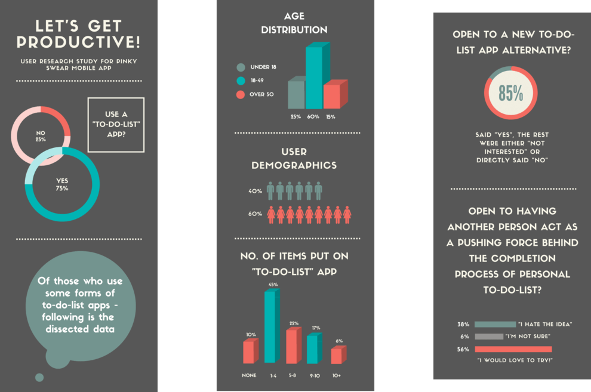
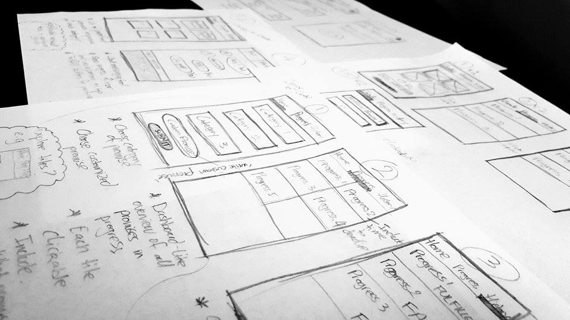
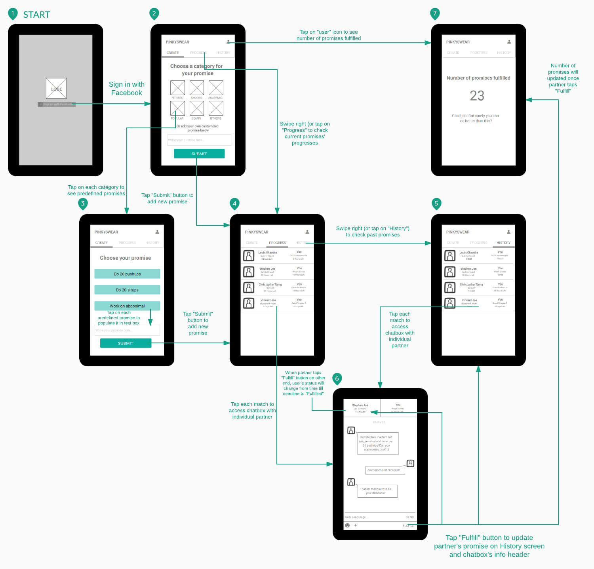
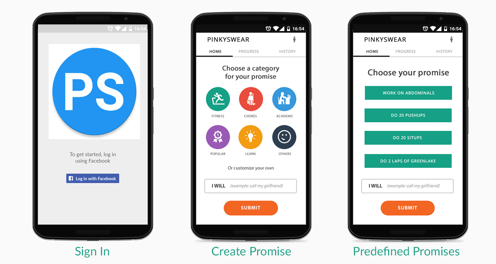
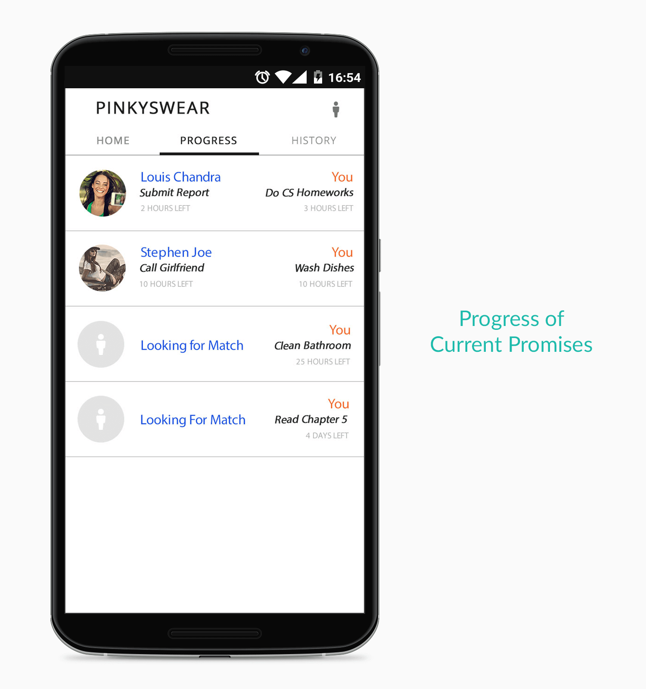
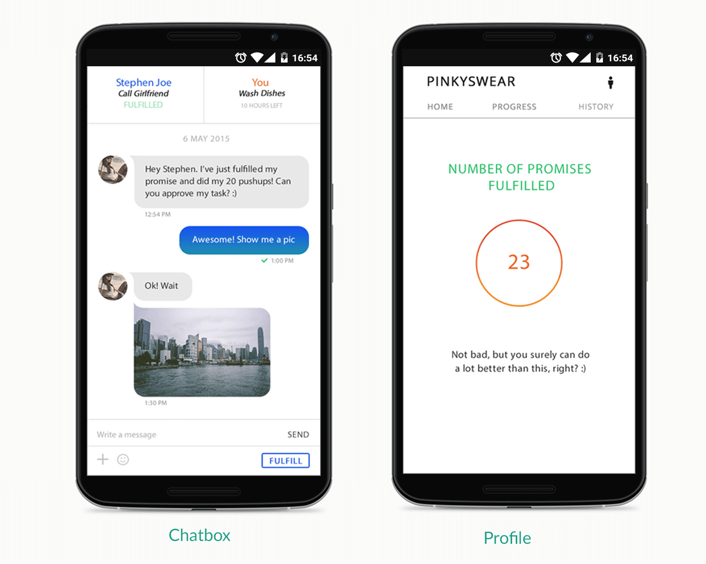

What Is Pinky Swear?
Pinky Swear was a personal project which I worked on for about a year with a developer friend, who originally came up with the idea. In fact, he already got a fully functional app going when he asked me for help with the UI/UX side of things. Hungry for a personal project to work on, I didn't hesitate to take up the job.
Essentially, Pinky Swear is an Android mobile application that strives to offer users a novel and fun way to stay productive. The primary idea was to allow a user (i.e. User A) make a "promise" to another randomly matched user (i.e. User B), who in turn will also have to make a promise to User A. A specific timeframe of 24 hours will be set for both users, and throughout the course, User A and B will have the chance to communicate with each another via a chat messenging tool - giving them a chance to encourage one another to fulfill his/her promise.
The catch? Once User A fulfills his/her promise in action, only User B can check it off on the app - thereby giving the app a collaborative nature overall. In a way, you can refer to Pinky Swear as a "collaborative to-do-list" app.
So How Did We Do It?
Being a side project, we had a lot of freedom in the ways we wanted to do things. Nonetheless, my UX Designer's ego didn't allow me to take the work lightly and just "let in flow". Given that the app itself was still early in its development stage, there were definitely a lot of design opportunities present. Of course, I wanted to maximize these opportunities in the most user-centered approach as possible.
Surveying
First, quantitative user research was conducted in the form of a survey. A total of 50 people were randomly chosen from friend and family circles, as well as the public. Below is a summary analysis of the process, along with important questions asked, associated responses, and data findings.
From the survey, three important numbers which support the concept behind Pinky Swear emerged:
- 85% of respondents were already using a "to-do-list" app of some kind. This illustrated the market's popularity.
- 75% of respondents stated that they would like to try a new alternative. This provided a cue to enter the market.
- 56% of respondents said that they would try out the idea of "having another person act as a pushing force behind the completion process of their personal to-do-lists". An important data that suggested an opportunity for Pinky Swear.
Through the research, it is also interesting to find that our largest target audience consisted of females aged between 18 and 49, and those who typically possess 1-4 actions they have to complete as well as be reminded of per day.
Ideating With Sketches
We met first to discuss ways in which we could make Pinky Swear better based on our survey responses. Early sketches were followed after many discussions.
Wireframing With A User Flow
Based on the user research feedback and early sketches, a user flow was beginning to take shape. As a team, we started to have a clear view of what solutions we could provide to our users, and what their mental model would be. A set of wireframes were accordingly created for usability testing purposes.
The following were important design decisions made:
- Provide "Sign Up With Facebook" as the only available registration option to speed up the onboarding process - making it the more easy and convenient for users to start using the app.
- Provide two methods for creating promises: 1) Using "predefined promises" suggested by the app in order to get users started with Pinky Swear, while giving them a good idea of the promise types they could make, AND 2) Customizing their own promises and essentially creating whatever the users wish.
- Allow users to see the exact number of promises they've fulfilled ever since the app's initial download. This will serve as the motivational force.
- Allow users to communicate with their matched partners via a chat messaging tool, in order to enhance the "fun" aspect. Once a promise is fulfilled in action, only the user's partner can check it off by tapping the "Fulfill" button.
- Allow users to check the current progress of their promises, their matched partners' promises, and time left to fulfill the promises. At the same time, allow users to review past promises that either failed or were successfully fulfilled. These will serve as the "Overview" dashboards for users to get a good grasp of where they stand.
Usability Testing
Using the wireframes above, an interactive prototype was created to test on 10 users. Their feedback was then incorporated into the next design iteration.
The following were key changes:
- On the screen where users can see the exact number of promises they've fulfilled ever since the app's download, a small motivational message can accompany the number. Depending on the range within which the number is located, the message could be different.
- Allow users to add images & emoticons within the chat messaging tool. Images can help with the "evidence" factor, giving users a way to prove that they have indeed carried out an action and fulfilled their promises. Emoticons will help to make the chats more fun & inviting.
- Include "Popular" as one of the promise categories. This will contain the most commonly used promises within the Pinky Swear community.
- White background with soft flat colors on top to complement the clean and minimalist design concept.
- Big, bold buttons and generally easily identifiable action items.
Final Hi-Fi Design
A set of high-fidelity designs were created with a proper color palette and iconography usage.
  Releases
After roughly four months of design, development, as well as marketing efforts, the 1st version of Pinky Swear was released onto Google Play in June 2015. While the initial plan was to only build the app for fun, opportunities where Pinky Swear's current as well as potential features could be further developed were explored.
A second round of usability testing with five participants was conducted using the functional app. Below were key changes/additions:
- Implement a "match up with Facebook friends" feature. This will allow users who feel uncomfortable about being matched with strangers to find partners within their friend or family circles.
- Implement a pop-up notification which says "Well done! You've just fulfilled a promise" after the user's partner checks off his/her promise. This can appear on any screens in the app, or even outside of the app.
- Implement pop-up notifications that inform users of promise deadlines approaching, AND promises that have passed deadlines.
- Implement a simple one-page tutorial that will teach users how to use Pinky Swear. This screen will automatically be visible to newly registered users as soon as they log in for the first time. A "Tutorial" button can be located next to the "Profile" button. This will allow users to access the Tutorial page anytime.
Feedback from the usability test allowed us to release Pinky Swear V.2 in November 2015.
Update & Reflection
As of March 2016, the decision had been made to discontinue Pinky Swear's operation, due to a lack of market interest. With well over 500 downloads throughout its lifetime, this concluded our one year of experience with this very special project - one that had taught us a great lesson about the end-to-end cycle of agile product development. More importantly, we've given ourselves the chance to appreciate the significance of teamwork & collaboration as a component of success.
With Pinky Swear, I've personally had the opportunity to ship my first ever design as a UX professional. As such, the app will always maintain a very special spot in my heart. Thank you to everyone who has shown and continues to offer your support to Pinky Swear. This experience wouldn't have been possible without all of you. :)